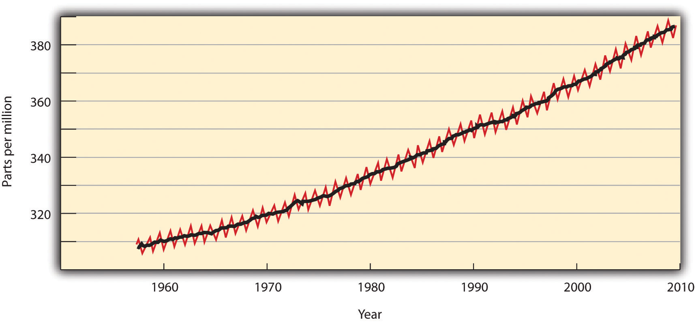
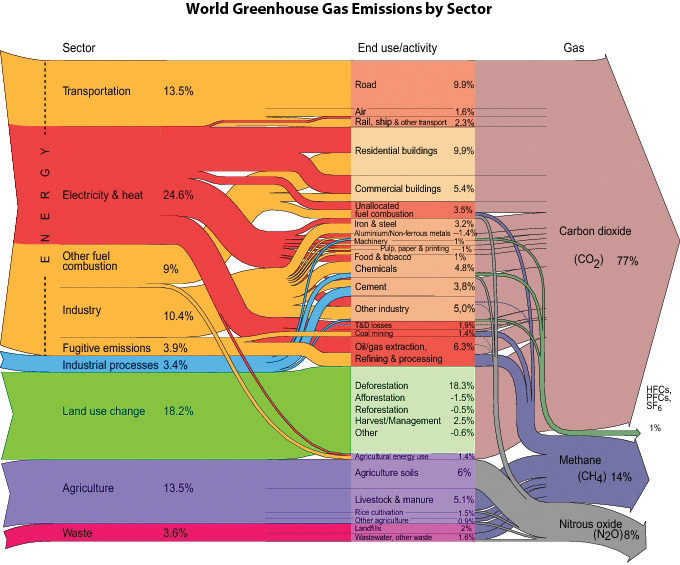
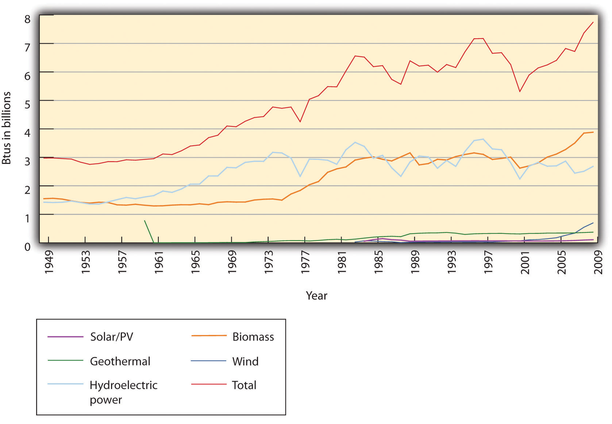

The thickness of the air, compared to the size of the Earth, is something like the thickness of a coat of shellac on a schoolroom globe. Many astronauts have reported seeing that delicate, thin, blue aura at the horizon of the daylit hemisphere and immediately, unbidden, began contemplating its fragility and vulnerability. They have reason to worry.Carl Sagan, Billions and Billions (New York, NY: Random House 1997), 86.
Carl Sagan
Since the beginning of their history, humans have altered their environment. Only recently, however, have we realized how human activities influence earth’s terrestrial, hydrological, and atmospheric systems to the extent that these systems may no longer maintain the stable climate and services we have assumed as the basis of our economies. The science of climate change developed rapidly in the late twentieth century as researchers established a correlation between increasing atmospheric concentrations of certain gases, human activities emitting those gases, and a rapid increase in global temperatures. Many, but by no means all, international policy makers spurred research as it became apparent that impacts ranging from melting polar ice caps to acidified oceans and extreme weather patterns were attributed to anthropogenic (human) influences on climate. Global businesses, many of which initially balked at potential economic disruption from changes in the use of fossil fuel and other business practices, have largely acceded to the need for change. Nonetheless, the overall response to the challenge has been slow and not without resistance, thereby increasing the potential opportunities and urgency.
In the early 1820s, Joseph Fourier, the French pioneer in the mathematics of heat diffusion, became interested in why some heat from the sun was retained by the earth and its atmosphere rather than being reflected back into space. Fourier conceived of the atmosphere as a bell jar with the atmospheric gases retaining heat and thereby acting as the containing vessel. In 1896, Swedish Nobel laureate and physicist Svante August Arrhenius published a paper in which he calculated how carbon dioxide (CO2) could affect the temperature of the earth. He and early atmospheric scientists recognized that normal carbon dioxide levels in the atmosphere contributed to making the earth habitable. Scientists also have known for some time that air pollution alters weather. For example, certain industrial air pollutants can significantly increase rainfall downwind of their source. As intensive agriculture and industrial activity have expanded very rapidly around the world since 1850 (Figure 5.1 "Increase in Global Carbon Emissions from Fossil Fuel Combustion, 1750–2006"), a growing body of scientific evidence has accumulated to suggest that humans influence global climate.
Figure 5.1 Increase in Global Carbon Emissions from Fossil Fuel Combustion, 1750–2006

Units of carbon are often used instead of CO2, which can be confusing. One ton of carbon equals 3.67 tons of CO2. Hence emissions of CO2 in 2006 were roughly eight billion tons of carbon, or twenty-nine billion tons of CO2.
Source: Oak Ridge National Laboratory, Carbon Dioxide Information Analysis Center, accessed August 19, 2010, http://cdiac.ornl.gov/trends/emis/graphics/global_ff_1751_2006.jpg.
The earth’s climate has always varied, which initially raised doubts about the significance of human influences on climate or suggested our impact may have been positive. Successive ice ages, after all, likely were triggered by subtle changes in the earth’s orbit or atmosphere and would presumably recur. Indeed, changes in one earth system, such as solar energy reaching the earth’s surface, can alter other systems, such as ocean circulation, through various feedback loops. The dinosaurs are thought to have gone extinct when a meteor struck the earth, causing tsunamis, earthquakes, fires, and palls of ash and dust that would have hindered photosynthesis and lowered oxygen levels and temperatures. Aside from acute catastrophes, however, climate has changed slowly, on the scale of tens of thousands to millions of years. The same paleoclimatological data also suggest a strong correlation between atmospheric CO2 levels and surface temperatures over the past 400,000 years and indicate that the last 20 years have been the warmest of the previous 1,000.National Oceanic and Atmospheric Administration Paleoclimatology, “A Paleo Perspective on Global Warming,” July 13, 2009, accessed August 19, 2010, http://www.ncdc.noaa.gov/paleo/globalwarming/home.html.
In the last decades of the twentieth century, scientists voiced concern over a rapid increase in “greenhouse gases.” Greenhouse gases (GHGs)Gases that trap heat in the earth’s atmosphere, leading to elevated surface and air temperatures. The GHGs of most concern due to their potency or prevalence are carbon dioxide, nitrous oxide, methane, and chlorofluorocarbons. were named for their role in retaining heat in earth’s atmosphere, causing a greenhouse effect similar to that in Fourier’s bell jar. Increases in the atmospheric concentration of these gases, which could be measured directly in modern times and from ice core samples, were correlated with a significant warming of the earth’s surface, monitored using meteorological stations, satellites, and other means (see Figure 5.2 "Increases in the Concentration of Atmospheric CO").
Figure 5.2 Increases in the Concentration of Atmospheric CO2, 1958–2009
Source: Scripps Institution of Oceanography and NOAA Earth System Research Lab, “Trends in Atmospheric Carbon Dioxide,” accessed August 19, 2010, http://www.esrl.noaa.gov/gmd/ccgg/trends.
The gases currently of most concern include CO2, nitrous oxide (N2O), methane (CH4), and chlorofluorocarbons (CFCs). CO2, largely a product of burning fossil fuels and deforestation, is by far the most prevalent GHG, albeit not the most potent. Methane, produced by livestock and decomposition in landfills and sewage treatment plants, contributes per unit twelve times as much to global warming than does CO2. N2O, created largely by fertilizers and coal or gasoline combustion, is 120 times as potent. CFCs, wholly synthetic in origin, have largely been phased out by the 1987 Montreal Protocol because they degraded the ozone layer that protected earth from ultraviolet radiation (Figure 5.3 "Sources and Types of GHG Emissions, 2000"). The successor hydrochlorofluorocarbons (HCFCs), however, are GHGs with potencies one to two orders of magnitude greater than CO2.
Figure 5.3 Sources and Types of GHG Emissions, 2000
Source: Riccardo Pravettoni, UNEP/GRID-Arendal and World Resources Institute, Climate Analysis Indicator Tool (CAIT), “Navigating the Numbers: Greenhouse Gas Data and International Climate Policy,” December 2005; Intergovernmental Panel on Climate Change, 1996 (data for 2000), http://maps.grida.no/go/graphic/world-greenhouse-gas-emissions-by-sector2.
In response to such findings, the United Nations and other international organizations gathered in Geneva to convene the First World Climate Conference in 1979. In 1988, a year after the Brundtland Commission called for sustainable development, the World Meteorological Organization (WMO) and the United Nations Environment Programme (UNEP) created the Intergovernmental Panel on Climate Change (IPCC)An international body of scientific experts who regularly assess the scientific, technical, and socioeconomic aspects of climate change, its risks, and possible mitigation.. The IPCC gathered 2,500 scientific experts from 130 countries to assess the scientific, technical, and socioeconomic aspects of climate change, its risks, and possible mitigation.The IPCC comprises three working groups and a task force. Working Group I assesses the scientific aspects of the climate system and climate change. Working Group II addresses the vulnerability of socioeconomic and natural systems to climate change, negative and positive consequences of climate change, and options for adapting to those consequences. Working Group III assesses options for limiting greenhouse gas emissions and otherwise mitigating climate change. The Task Force on National Greenhouse Gas Inventories implemented the National Greenhouse Gas Inventories Program. Each report has been written by several hundred scientists and other experts from academic, scientific, and other institutions, both private and public, and has been reviewed by hundreds of independent experts. These experts were neither employed nor compensated by the IPCC nor by the United Nations system for this work. The IPCC’s First Assessment Report, published in 1990, concluded that the average global temperature was indeed rising and that human activity was to some degree responsible (Figure 5.4 "Temperature Elevation, 1880–2009"). This report laid the groundwork for negotiation of the Kyoto Protocol, an international treaty to reduce GHG emissions that met with limited success. Subsequent IPCC reports and myriad other studies indicated that climate change was occurring faster and with worse consequences than initially anticipated.
Figure 5.4 Temperature Elevation, 1880–2009

Source: NASA, Goddard Institute for Space Studies, “GISS Surface Temperature Analysis,” accessed August 19, 2010, http://data.giss.nasa.gov/gistemp/graphs.
Modern systematic measurement of CO2 emissions began with the work of scientist Charles David Keeling in the 1950s. The steady upward trajectory of atmospheric CO2 graphed by Dr. Keeling became known as the Keeling curve. This comment is from a front page New York Times article on December 21, 2010: “In later years, as the scientific evidence about climate change grew, Dr. Keeling’s interpretations became bolder, and he began to issue warnings. In an essay in 1998, he replied to claims that global warming was a myth, declaring that the real myth was that ‘natural resources and the ability of the earth’s habitable regions to absorb the impacts of human activities are limitless.’ In an interview in La Jolla, Dr. Keeling’s widow, Louise, said that if her husband had lived to see the hardening of the political battle lines over climate change, he would have been dismayed. “He was a registered Republican,” she said. “He just didn’t think of it as a political issue at all.”Justin Gillis, “Temperature Rising: A Scientist, His Work and a Climate Reckoning,” New York Times, December 21, 2010, http://www.nytimes.com/2010/12/22/science/earth/22carbon.html?_r=1&pagewanted=2.
The IPCC Fourth Assessment Report in 2007 summarized much of the current knowledge about global climate change, which included actual historical measurements as well as predictions based on increasingly detailed models.Rajendra K. Pachauri and Andy Reisinger, eds. (core writing team), Climate Change 2007: Synthesis Report (Geneva, Switzerland: Intergovernmental Panel on Climate Change, 2008). Available from the Intergovernmental Panel on Climate Change, “IPCC Fourth Assessment Report: Climate Change 2007,” accessed August 19, 2010, http://www.ipcc.ch/publications_and_data/ar4/syr/en/contents.html. A fifth assessment report was begun in January 2010 but has yet to be completed. Unless otherwise footnoted, all numbers in this list are from the fourth IPCC assessment. These findings represent general scientific consensus and typically have 90 percent or greater statistical confidence.
The global average surface temperature increased 0.74°C ± 0.18°C (1.3°F ± 0.32°F) from 1906 to 2005, with temperatures in the upper latitudes (nearer the poles) and over land increasing even more. In the same period, natural solar and volcanic activity would have decreased global temperatures in the absence of human activity. Depending on future GHG emissions, the average global temperature is expected to rise an additional 0.5°C to 4°C by 2100, which could put over 30 percent of species at risk for extinction. Eleven of the twelve years from 1995 to 2006 were among the twelve warmest since 1850, when sufficient records were first kept. August 2009 had the hottest ocean temperatures and the second hottest land temperatures ever recorded for that month, and 2010 tied 2005 as the warmest year in the 131-year instrumental record for combined global land and ocean surface temperature.Data more current than the fourth IPCC report are available from NASA and NOAA, among other sources, at NASA, “GISS Surface Temperature Analysis (GISTEMP),” accessed January 27, 2011, http://data.giss.nasa.gov/gistemp; and National Oceanic and Atmospheric Administration, “NOAA: Warmest Global Sea-Surface Temperatures for August and Summer,” September 16, 2009, accessed January 27, 2011, http://www.noaanews.noaa.gov/stories2009/20090916_globalstats.html.
Precipitation patterns have changed since 1900, with certain areas of northern Europe and eastern North and South America becoming significantly wetter, while the Mediterranean, central Africa, and parts of Asia have become significantly drier. Record snowfalls in Washington, DC, in the winter of 2009–10 reflected this trend, as warmer, wetter air dumped nearly one meter of snow on the US capital in two storms.Bryan Walsh, “Another Blizzard,” Time, February 10, 2010, accessed January 7, 2011, http://www.time.com/time/health/article/0,8599,1962294,00.html.
Coral reefs, crucial sources of marine species diversity, are dying, due in part to their sensitivity to increasing ocean temperatures and ocean acidity. Oceans acidify as they absorb additional CO2; lower pH numbers indicate more acidic conditions. Ocean pH decreased 0.1 points between the years 1750 to 2000 and is expected to decrease an additional 0.14 to 0.35 pH by 2100. (A pH difference of one is the difference between lemon juice and battery acid.)
Glaciers and mountain snowpacks, crucial sources of drinking water for many people, have been retreating for the past century. From 1979 to 2006, Arctic ice coverage declined between 6 and 10 percent, with declines in summer coverage of 15–30 percent (Figure 5.7 "Decrease in Arctic Sea Ice, 1979–2009").
Figure 5.7 Decrease in Arctic Sea Ice, 1979–2009

Source: NOAA, National Snow and Ice Data Center, accessed March 5, 2011, ftp://sidads.colorado.edu/DATASETS/NOAA/G02135/Jan/N_01_area.txt.
Seas have risen 20 to 40 centimeters over the past century as glaciers melted and water expanded from elevated temperatures. Sea levels rose at a rate of 1.8 (±0.5) millimeters per year from 1961 to 2003. From 1993 to 2003 alone, that rate was dramatically higher: 3.1 (±0.7) millimeters per year. An additional rise in sea level of 0.4 to 3.7 meters (1.3 to 12.1 feet) is expected by 2100. The former amount would threaten many coastal ecosystems and communities;James G. Titus, K. Eric Anderson, Donald R. Cahoon, Dean B. Gesch, Stephen K. Gill, Benjamin T. Gutierrez, E. Robert Thieler, and S. Jeffress Williams (lead authors), Coastal Elevations and Sensitivity to Sea-Level Rise: A Focus on the Mid-Atlantic Region (Washington, DC: US Climate Change Science Program, 2009), accessed August 19, 2010, http://www.epa.gov/climatechange/effects/coastal/sap4-1.html. the latter would be enough to submerge completely the archipelago nation of the Maldives. If trends continue as predicted, inundation of global coastal areas and island communities may soon present major human migration and resettlement challenges. Many consider this the most critical climate change issue.
Trees are moving northward into the tundra. A thawing permafrost, meanwhile, would release enough methane to catastrophically accelerate global warming.National Science Foundation, “Methane Releases from Arctic Shelf May Be Much Larger and Faster Than Anticipated,” news release, March 4, 2010, accessed January 7, 2011, http://www.nsf.gov/news/news_images.jsp?cntn_id=116532&org=NSF and http://www.nsf.gov/news/news_summ.jsp?cntn_id=116532&org=NSF&from=news. Other species, too, are migrating or threatened, such as the polar bear. The population of polar bears is expected to decline two-thirds by 2050 as their ice pack habitats disintegrate under current trends.US Geological Survey, “USGS Science to Inform U.S. Fish & Wildlife Service Decision Making on Polar Bears, Executive Summary,” accessed January 27, 2011, http://www.usgs.gov/newsroom/special/polar_bears/docs/executive_summary.pdf. Warmer waters will also increase the range of cholera and other diseases and pests.World Health Organization, “Cholera,” June 2010, accessed August 19, 2010, http://www.who.int/mediacentre/factsheets/fs107/en/index.html.
At the same time that humans have increased production of GHGs, they have decreased the ability of the earth’s ecosystems to reabsorb those gases. Deforestation and conversion of land from vegetation to built structures reduces the size of so-called carbon sinks. Moreover, conventional building materials such as pavement contribute to local areas of increased temperature, called heat islands, which in the evenings can be 12°C (22°F) hotter than surrounding areas. These elevated local temperatures further exacerbate the problems of climate change for communities through energy demand, higher air-conditioning costs, and heat-related health problems.US Environmental Protection Agency, “Heat Island Effect,” accessed January 27, 2011, http://www.epa.gov/heatisland.
By impairing natural systems, climate change impairs social systems. A shift in climate would alter distributions of population, natural resources, and political power. Droughts and rising seas that inundate populous coastal areas would force migration on a large scale. Unusually severe weather has already increased costs and death tolls from hurricanes, floods, heat waves, and other natural disasters. Melting Arctic ice packs have also led countries to scramble to discover and dominate possible new shipping routes. When the chairman of the Norwegian Nobel Committee awarded the 2007 Nobel Peace Prize to the IPCC and Al Gore, he said, “A goal in our modern world must be to maintain ‘human security’ in the broadest sense.” Similarly, albeit with different interests in mind, the United States’ 2008 National Intelligence Assessment, which analyzes emerging threats to national security, focused specifically on climate change.Ole Danbolt Mjøs, “Award Ceremony Speech” (presentation speech for the 2007 Nobel Peace Prize, Oslo, Norway, December 10, 2007), accessed January 7, 2011, http://nobelprize.org/nobel_prizes/peace/laureates/2007/presentation-speech.html.
Scientists have tried to define acceptable atmospheric concentrations of CO2 or temperature rises that would still avert the worst consequences of global warming while accepting we will likely not entirely undo our changes. NASA scientists and others have focused on the target of 350 parts per million (ppm) of CO2 in the atmosphere.James Hansen, Makiko Sato, Pushker Kharecha, David Beerling, Valerie Masson-Delmotte, Mark Pagani, Maureen Raymo, Dana L. Royer, and James C. Zachos, “Target Atmospheric CO2: Where Should Humanity Aim?” The Open Atmospheric Science Journal 2 (2008): 217–31. Their paleoclimatological data suggest that a doubling of CO2 in the atmosphere, which is well within some IPCC scenarios for 2100, would likely increase the global temperature by 6°C (11°F). Atmospheric CO2 levels, however, passed 350 ppm in 1990 and reached 388 ppm by early 2010. This concentration will continue to rise rapidly as emissions accumulate in the atmosphere. Worse, even if the CO2 concentration stabilizes, temperatures will continue to rise for some centuries, much the way a pan on a stove keeps absorbing heat even if the flame is lowered. Hence scientists have begun to suggest that anything less than zero net emissions by 2050 will be too little, too late; policy makers have yet to embrace such aggressive action.H. Damon Matthews and Ken Caldeira, “Stabilizing Climate Requires Near-Zero Emissions,” Geophysical Research Letters 35, no. 4: L04705 (2008), 1–5.
The primary international policy response to climate change was the United Nations Framework Convention on Climate Change (UNFCCC)An international convention adopted in 1992 and entered in force in 1994 that became the first binding international legal instrument dealing directly with climate change.. The convention was adopted in May 1992 and became the first binding international legal instrument dealing directly with climate change. It was presented for signature at the Earth Summit in Rio de Janeiro and went into force in March 1994 with signatures from 166 countries. By 2010 the convention had been accepted by 193 countries.United Nations Framework Convention on Climate Change, “Status of Ratification of the Convention,” accessed January 27, 2011, http://unfccc.int/kyoto_protocol/status_of_ratification/items/2613.php. UNFCCC signatories met in 1997 in Kyoto and agreed to a schedule of reduction targets known as the Kyoto Protocol. Industrialized countries committed to reducing emissions of specific GHGs, averaged over 2008–12, to 5 percent below 1990 levels. The European Union (EU) committed to an 8 percent reduction and the United States to 7 percent. Other industrialized countries agreed to lesser reductions or to hold their emissions constant, while developing countries made no commitments but hoped to industrialize more cleanly than their predecessors. Partly to help developing countries, the Kyoto Protocol also created a market for trading GHG emission allowances. If one country developed a carbon sink, such as by planting a forest, another country could buy the amount of carbon sequestered and use it to negate the equivalent amount of its own emissions.
The Kyoto Protocol has ultimately suffered from a lack of political will in the United States and abroad. The United States signed it, but the Senate never ratified it. US President George W. Bush backed away from the emission reduction targets and eventually rejected them entirely. By the time he took office in 2001, a 7 percent reduction from 1990 levels for the United States would have translated into a 30 percent reduction from 2001 levels. US GHG emissions, instead of declining, rose 14 percent from 1990 to 2008 (see Figure 5.8 "Increase in US Energy Consumption, Total and Renewable, in Billions of BTU, 1949–2008" for related energy consumption).US Environmental Protection Agency, 2010 Greenhouse Gas Inventory Report (Washington, DC: US Environmental Protection Agency, 2010), accessed January 29, 2011, http://www.epa.gov/climatechange/emissions/downloads10/US-GHG -Inventory-2010_ExecutiveSummary.pdf. Almost all other Kyoto signatories will also fail to meet their goals. The EU, in contrast, is on track to meet or exceed its Kyoto targets.European Union, “Climate Change: Progress Report Shows EU on Track to Meet or Over-Achieve Kyoto Emissions Target,” news release, November 12, 2009, accessed August 19, 2010, http://europa.eu/rapid/pressReleasesAction.do?reference=IP/09/1703&format=HTML&aged=0&language=EN&guiLanguage=en. GHG pollution allowances for major stationary sources have been traded through the EU Emissions Trading System since 2005. The consensus in Europe is that the Kyoto Protocol is necessary and action is required to reduce GHGs.
Figure 5.8 Increase in US Energy Consumption, Total and Renewable, in Billions of BTU, 1949–2008
Source: Energy Information Administration, “Annual Energy Review, 2008,” accessed March 10, 2011, http://www.eia.doe.gov/aer/txt/ptb1001.html and http://www.eia.doe.gov/aer/txt/ptb0201a.html.
The Kyoto Protocol expires in 2012, so meetings have begun to negotiate new goals. In December 2007, UNFCCC countries met in Bali to discuss a successor treaty. The conference made little headway, and countries met again in December 2009 in Copenhagen. That conference again failed to generate legally binding reduction goals, but the countries confirmed the dangers of climate change and agreed to strive to limit temperature increases to no more than 2°C total. A subsequent meeting was held in Cancun, Mexico, in late 2010.
Individual countries and US states and agencies have acted, nonetheless, in the absence of broader leadership. In 2007, EU countries set their own future emissions reduction goals, the so-called 20-20-20 strategy of reducing emissions 20 percent from 1990 levels by 2020 while reducing energy demand 20 percent through efficiency and generating 20 percent of energy from renewable resources. In January 2008 the European Commission proposed binding legislation to implement the 20-20-20 targets. This “climate and energy package” was approved by the European Parliament and Council in December 2008. It became law in June 2009.European Commission, “The EU Climate and Energy Package,” accessed January 29, 2011, http://ec.europa.eu/clima/policies/brief/eu/package_en.htm and http://ec.europa.eu /environment/climat/climate_action.htm. In the Northeast United States, ten states collaborated to form the Regional Greenhouse Gas Initiative (RGGI), which caps and gradually lowers GHG emissions from power plants by 10 percent from 2009 to 2018. A similar program, the Western Climate Initiative, is being prepared by several western US states and Canadian provinces, and California’s Assembly Bill 32, the Global Warming Solutions Act, set a state GHG emissions limit for 2020.California Environmental Protection Agency Air Resources Board, “Assembly Bill 32: Global Warming Solutions Act,” accessed August 19, 2010, http://www.arb.ca.gov/cc/ab32/ab32.htm. Likewise, the federal government under President Barack Obama committed to reducing its emissions, while the US Environmental Protection Agency (EPA), in response to a 2007 lawsuit led by the state of Massachusetts, prepared to regulate GHGs under the Clean Air Act.
On December 23, 2010, the New York Times reported, “The Environmental Protection Agency announced a timetable on Thursday for issuing rules limiting greenhouse gas emissions from power plants and oil refineries, signaling a resolve to press ahead on such regulation even as it faces stiffening opposition in Congress. The agency said it would propose performance standards for new and refurbished power plants next July, with final rules to be issued in May 2012.”Matthew L. Wald, “E.P.A. Says It Will Press on With Greenhouse Gas Regulation,” New York Times, December 23, 2010, http://www.nytimes.com/2010/12/24/science/earth/24epa.html?_r=1&ref=environmentalprotectionagency.
Members of Congress, however, have threatened to curtail the EPA’s power to do so, either by altering the procedures for New Source Review that would require carbon controls or by legislatively decreeing that global warming does not endanger human health.“Coal State Senators Battle EPA to Control Greenhouse Gases,” Environmental News Service, February 23, 2010, accessed January 7, 2011, http://www.ens-newswire.com/ens/feb2010/2010-02-23-093.html; Juliet Eilperin and David A. Fahrenthold, “Lawmakers Move to Restrain EPA on Climate Change,” Washington Post, March 5, 2010, accessed January 7, 2011, http://www.washingtonpost.com/wp-dyn/content/article/2010/03/04/AR2010030404715.htm. In contrast, one bill to combat climate change would have reduced US emissions by 80 percent from 2005 levels by 2050. It passed the House of Representatives in 2009 but failed to make it to a Senate vote.
Certain industries are more vulnerable than others to the economic impacts of climate change. Industries that are highly dependent on fossil fuels and high CO2 emitters, such as oil and gas companies, cement producers, automobile manufacturers, airlines, and power plant operators, are closely watching legislation related to GHGs. The reinsurance industry, which over the past several years has taken large financial losses due to extreme weather events, is deeply concerned about global climate change and liabilities for its impacts.
Given the potential costs of ignoring climate change, the costs of addressing it appear rather minimal. In 2006, the UK Treasury released the Stern Review on the Economics of Climate Change. The report estimated that the most immediate effects of global warming would cause damages of “at least 5% of global GDP each year, now and forever. If a wider range of risks and impacts is taken into account, the estimates of damage could rise to 20% of GDP or more.” Actions to mitigate the change, in contrast, would cost only about 1 percent of global GDP between 2010 and 2030.Lord Stern, “Executive Summary,” in Stern Review on the Economics of Climate Change (London: HM Treasury, 2006), 1, accessed January 7, 2011, http://www.hm-treasury.gov.uk/sternreview_index.htm.
Corporate reactions have ranged from taking action now to reduce or eliminate emissions of GHGs and active engagement with carbon trading markets to actively opposing new policies that might require changes in products or processes. Anticipatory firms are developing scenarios for potential threats and opportunities related to those policies, public opinion, and resource constraints. Among those companies actively pursuing a reduction in GHGs, some cite financial gains for their actions. Walmart and General Electric both committed to major sustainability efforts in the first decade of the twenty-first century as have many smaller corporations. Central to their strategies are GHG reduction tactics.
Excessive GHG emissions may reflect inefficient energy use or loss of valuable assets, such as when natural gas escapes during production or use. The Carbon Disclosure Project emerged in 2000 as a private organization to track GHG emissions for companies that volunteered to disclose their data. By 2010, over 1,500 companies belonged to the organization, and institutional investors used these and other data to screen companies for corporate social responsibility. Out of concern for good corporate citizenship and in anticipation of potential future regulation, GHG emissions trading has become a growing market involving many large corporations. The emissions trading process involves credits for renewable energy generation, carbon sequestration, and low-emission agricultural and industrial practices that are bought and sold or optioned in anticipation of variable abilities to reach emissions reduction targets. Some companies have enacted internal, competitive emissions reduction goals and trading schemes as a way to involve all corporate divisions in a search for efficiency, cleaner production methods, and identification of other opportunities for reducing their contribution to climate change.
In parallel to tracking GHG emissions, clean tech or clean commerce has become increasingly prevalent as a concept and a term to describe technologies, such as wind energy, and processes, such as more efficient electrical grids, that do not generate as much or any pollution. New investments in sustainable energy increased between 2002 and 2008, when total investments in sustainable energy projects and companies reached $155 billion, with wind power representing the largest share at $51.8 billion.Rohan Boyle, Chris Greenwood, Alice Hohler, Michael Liebreich, Eric Usher, Alice Tyne, and Virginia Sonntag-O’Brien, Global Trends in Sustainable Energy Investment 2009, United Nations Environment Programme, 2008, accessed January 29, 2011, http://sefi.unep.org/fileadmin/media/sefi/docs/publications/Global_Trends_2008.pdf. Also in 2008, sustainability-focused companies as identified by the Dow Jones Sustainability Index or Goldman Sachs SUSTAIN list outperformed their industries by 15 percent over a six-month period.Daniel Mahler, Jeremy Barker, Louis Belsand, and Otto Schulz, Green Winners (Chicago: A. T. Kearney, 2009), 2, http://www.atkearney.com/images/global/pdf/Green_winners.pdf.
Our climate may always be changing, but humans have changed it dramatically in a short time with potentially dire consequences. GHGs emitted from human activities have increased the global temperature and will continue to increase it, even if we ceased all emissions today. International policy makers have built consensus for the need to curb global climate change but have struggled to take specific, significant actions. In contrast, at a smaller scale, local governments and corporations have attempted to mitigate and adapt to an altered future. Taking a proactive stance on climate change can make good business sense.
At a minimum, strategic planning should be informed by climate change concerns and the inherent liabilities and opportunities therein. Whether operationalized by large firms or smaller companies, one important form of entrepreneurial innovation inspired by climate change challenges today is to apply tools associated with reduced climate and resource footprints that result in systemic reduction of energy and material inputs. When applied within firms and across supply chains, such tools increase profitability by lowering costs. More important, these measures can lead to innovations made visible by the efforts. At minimum, opportunities for product design and process improvements that both reduce climate change impact and increase resource efficiency and consumer loyalty make sense. Companies that chart a course around the most likely set of future conditions with an eye to competitive advantage, good corporate citizenship, and stewardship of natural resources are likely to optimize their profitability and flexibility—and hence their strategic edge—in the future.